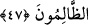
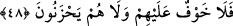

“Sonra yine onlar,” âyetlerden “yüz çeviriyorlar,” îman etmiyorlar.
Âyetteki “ __WORD__ ” “sonra” ifadesi onların îmandan yüz çevirmelerinin tabiî ve uzak bir
durum olmadığını göstermek içindir. Çünkü Allah Teâlâ, âyetlerini onlara yönelmeyi
gerektirecek şekilde böyle eşsiz bir biçimde tekrar tekrar açıklamıştır.
47. De ki: Söyler misiniz; size Allah’ın azabı ansızın veya açıkça gelirse, zalim
toplumdan başkası mı helâk olur?
“De ki:” Ey müşrikler! “Düşündünüz mü hiç!” Bana haber verin “Size Allah’ın
azabı,” gece veya gündüz “ansızın, ya da açıkça gelse”
Çoğunlukla geceleyin azab, birden bire, gündüzün de açıkca gelir. Bu durum, A’raf
sûresindeki şu âyete de uygundur:
“Peki o ülkelerin halkı, geceleyin uyurlarken azabımızın kendilerine
gelmeyeceğinden emin midirler? Ya da o ülkelerin halkı, kuşluk vakti eğlenirlerken
azabımızın onlara gelmeyeceğinden emin midirler?” (el-A’raf, 7/98)
Kur’ân âyetlerinin bazısı bazısını tefsir eder. Kalbe doğan da budur.
“Zalim toplumdan başkası mı helak edilir?” Yani, size has olan acil azab, önceki
ümmetlere geldiği gibi ansızın ve açıktan gelse, durum ne olur bana haber verin.
Sonra bunu açıklamak için şöyle buyuruldu:
“Zalim toplumdan başkası mı helak edilir?” Yani, size has olan bu azabla ancak siz
helak olursunuz. Zamir kullanacak yerde isim kullanılması, onların helak sebebinin îman
yerine küfrü koyma anlamına gelen zulümleri olduğunu bildirmek içindir.
48. Biz, peygamberleri ancak müjdeleyiciler ve uyarıcılar olarak göndeririz. Kim
îman eder ve kendini düzeltirse onlara korku yoktur. Onlar üzüntü de
çekmeyecekler.
Biz peygamberleri sadece müjdeciler ve uyarıcılar olarak göndeririz. Yani, biz
peygamberleri sadece insanları müjdelemeleri ve uyarmaları için gönderdik. Bu ikisi
peygamberlerin kesin olarak gönderilme sebeplerini bildirmektedir. Yani biz onları
kendilerinden mûcizeler istensin ve onlarla alay edilsin diye göndermedik. Bilakis
itâatin sevapla, günahın ceza ile karşılık göreceğini kavimlerine bildirerek onları